| Plc | Crest | Team | Manager | Key player | Pld | Won | Drw | Lst | For | Agst | GD | Pts | 1 | 2 | 3 | 4 | 5 | 6 | 7 | 8 | 9 | 10 | 11 | 12 | 13 | 14 | 15 | 16 | 17 | 18 | 19 | 20 | 21 | 22 | 23 | 24 | 25 | 26 | 27 | 28 | 29 | 30 | 31 | 32 | 33 | 34 | 35 | 36 | 37 | 38 |
|---|---|---|---|---|---|---|---|---|---|---|---|---|---|---|---|---|---|---|---|---|---|---|---|---|---|---|---|---|---|---|---|---|---|---|---|---|---|---|---|---|---|---|---|---|---|---|---|---|---|---|
| 1 | 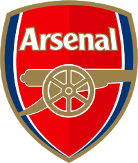 |
ArsenalThe Gunners | Mikel Arteta | Declan Rice | 38 | 26 | 7 | 5 | 71 | 27 | 44 | 85 | 6 | 1 | 3 | 2 | 2 | 2 | 1 | 1 | 1 | 1 | 1 | 1 | 1 | 1 | 1 | 1 | 1 | 1 | 1 | 1 | 1 | 1 | 1 | 1 | 1 | 1 | 1 | 1 | 1 | 1 | 1 | 1 | 1 | 1 | 1 | 1 | 1 | 1 |
| 2 | 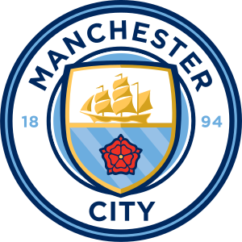 |
Manchester CityThe Citizens | The Blues | The Sky Blues | Pep Guardiola | Erling Haaland | 38 | 23 | 9 | 6 | 77 | 35 | 42 | 78 | 1 | 6 | 13 | 8 | 9 | 7 | 5 | 2 | 5 | 2 | 2 | 3 | 2 | 2 | 2 | 2 | 2 | 2 | 2 | 2 | 2 | 2 | 2 | 2 | 2 | 2 | 2 | 2 | 2 | 2 | 2 | 2 | 2 | 2 | 2 | 2 | 2 | 2 |
| 3 | 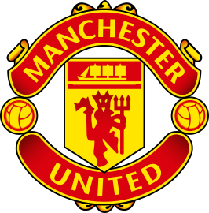 |
Manchester UnitedThe Red Devils | United | Michael CarrickRuben Amorim [11/11/24-05/01/26] | Casemiro | 38 | 20 | 11 | 7 | 69 | 50 | 19 | 71 | 15 | 16 | 9 | 14 | 11 | 14 | 10 | 9 | 6 | 8 | 7 | 10 | 7 | 8 | 6 | 6 | 7 | 6 | 6 | 6 | 7 | 5 | 4 | 4 | 4 | 4 | 4 | X | X | X | X | X | X | X | X | X | X | 3 |
| 4 | 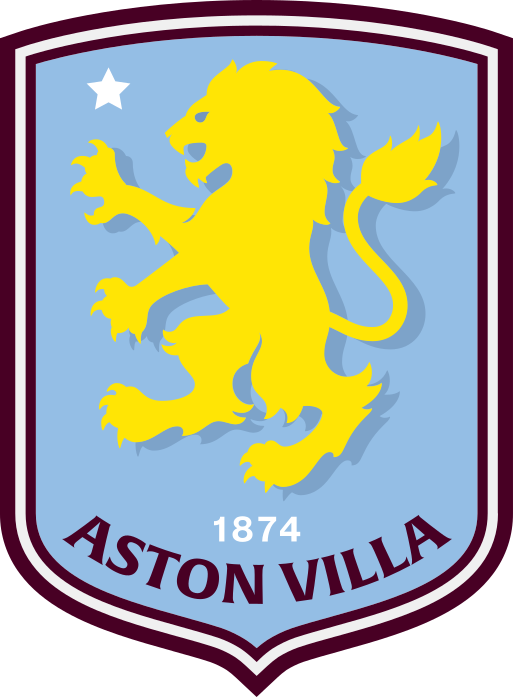 |
Aston VillaThe Villans | The Lions | Unai Emery | Ollie Watkins | 38 | 19 | 8 | 11 | 56 | 49 | 7 | 65 | 10 | 17 | 19 | 19 | 18 | 16 | 13 | 11 | 8 | 11 | 6 | 4 | 4 | 3 | 3 | 3 | 3 | 3 | 3 | 3 | 3 | 3 | 3 | 3 | 3 | 3 | 3 | X | X | X | X | X | X | X | X | X | X | 4 |
| 5 | 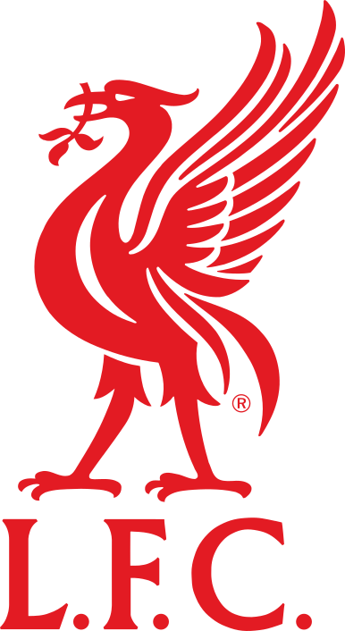 |
LiverpoolThe Reds | Arne Slot | Dominik Szoboszlai | 38 | 17 | 9 | 12 | 63 | 53 | 10 | 60 | 4 | 3 | 1 | 1 | 1 | 1 | 2 | 4 | 7 | 3 | 8 | 11 | 8 | 9 | 10 | 7 | 5 | 4 | 4 | 4 | 4 | 4 | 6 | 6 | 6 | 6 | 6 | X | X | X | X | X | X | X | X | X | X | 5 |
| 6 | 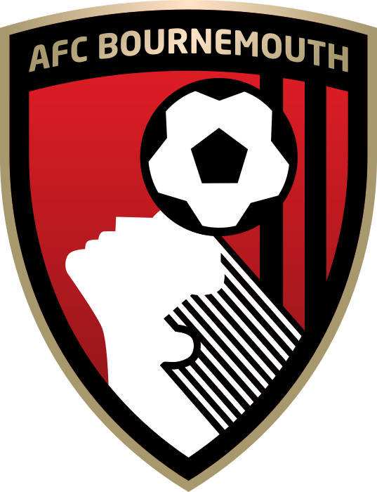 |
BournemouthThe Cherries | Boscombe | Andoni Iraola | Eli Junior KroupiAntoine Semenyo to ManC [09/01/26] | 38 | 13 | 18 | 7 | 58 | 54 | 4 | 57 | 16 | 9 | 7 | 4 | 4 | 6 | 4 | 3 | 2 | 5 | 5 | 8 | 11 | 13 | 13 | 13 | 15 | 15 | 15 | 15 | 15 | 15 | 13 | 13 | 11 | 9 | 8 | X | X | X | X | X | X | X | X | X | X | 6 |
| 7 | 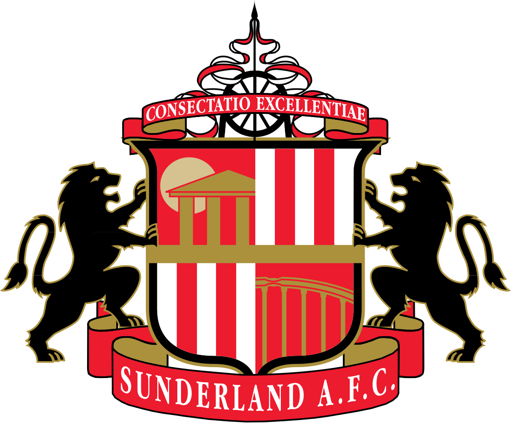 |
SunderlandThe Black Cats | Regis Le Bris | Granit Xhaka | 38 | 14 | 12 | 12 | 42 | 48 | -6 | 54 | 2 | 7 | 6 | 7 | 7 | 5 | 9 | 7 | 4 | 4 | 4 | 7 | 6 | 6 | 9 | 8 | 6 | 7 | 7 | 8 | 10 | 9 | 11 | 11 | 9 | 11 | 12 | X | X | X | X | X | X | X | X | X | X | 7 |
| 8 | 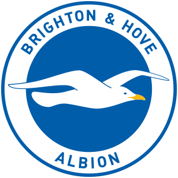 |
Brighton & Hove AlbionThe Seagulls | Fabian Hurzeler | Danny Welbeck | 38 | 14 | 11 | 13 | 52 | 46 | 6 | 53 | 8 | 18 | 11 | 13 | 14 | 10 | 12 | 10 | 13 | 10 | 11 | 6 | 5 | 7 | 8 | 10 | 9 | 13 | 14 | 10 | 11 | 12 | 12 | 12 | 14 | 14 | 14 | X | X | X | X | X | X | X | X | X | X | 8 |
| 9 | BrentfordThe Bees | Keith Andrews | Mikkel Damsgaard | 38 | 14 | 11 | 13 | 55 | 52 | 3 | 53 | 17 | 10 | 15 | 12 | 17 | 13 | 16 | 13 | 11 | 12 | 12 | 12 | 10 | 13 | 14 | 15 | 12 | 8 | 9 | 7 | 5 | 7 | 8 | 8 | 7 | 7 | 7 | X | X | X | X | X | X | X | X | X | X | 9 | |
| 10 | ChelseaThe Blues | Calum McFarlane Liam Rosenior [06/01/26-22/04/2026] Enzo Maresca [01/07/24-01/01/26] |
Moises Caicedo | 38 | 14 | 10 | 14 | 58 | 52 | 6 | 52 | 11 | 4 | 2 | 5 | 6 | 8 | 7 | 5 | 9 | 7 | 3 | 2 | 3 | 4 | 5 | 4 | 4 | 5 | 5 | 5 | 8 | 6 | 5 | 5 | 5 | 5 | 5 | X | X | X | X | X | X | X | X | X | X | 10 | |
| 13 | 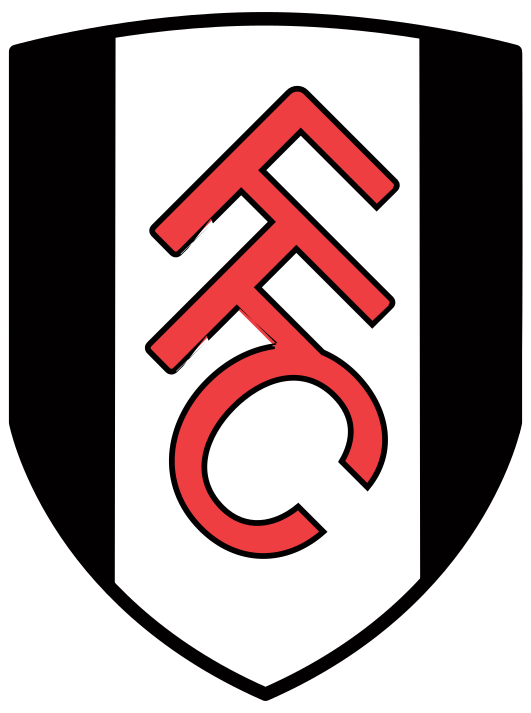 |
FulhamThe Cottagers | Marco Silva | Ryan Sessegnon | 38 | 15 | 7 | 16 | 47 | 51 | -4 | 52 | 9 | 13 | 18 | 11 | 8 | 11 | 14 | 15 | 17 | 14 | 15 | 15 | 15 | 15 | 15 | 14 | 13 | 10 | 11 | 11 | 9 | 11 | 7 | 7 | 10 | 12 | 10 | X | X | X | X | X | X | X | X | X | X | 11 |
| 11 | 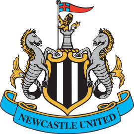 |
Newcastle UnitedThe Magpies | Eddie Howe | Sandro Tonali | 38 | 14 | 7 | 17 | 53 | 55 | -2 | 49 | 13 | 15 | 17 | 10 | 13 | 15 | 11 | 14 | 12 | 13 | 14 | 14 | 13 | 12 | 12 | 12 | 11 | 14 | 13 | 9 | 6 | 8 | 9 | 9 | 12 | 10 | 11 | X | X | X | X | X | X | X | X | X | X | 12 |
| 12 | 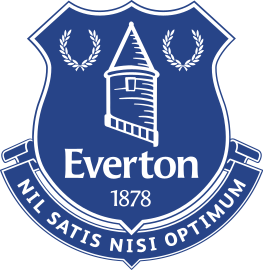 |
EvertonThe Toffees | The Toffeemen | David Moyes | Jack Grealish | 38 | 13 | 10 | 15 | 47 | 50 | -3 | 49 | 14 | 8 | 5 | 6 | 10 | 9 | 8 | 12 | 14 | 15 | 13 | 11 | 14 | 10 | 7 | 9 | 10 | 12 | 8 | 12 | 12 | 10 | 10 | 10 | 8 | 8 | 9 | X | X | X | X | X | X | X | X | X | X | 13 |
| 14 | 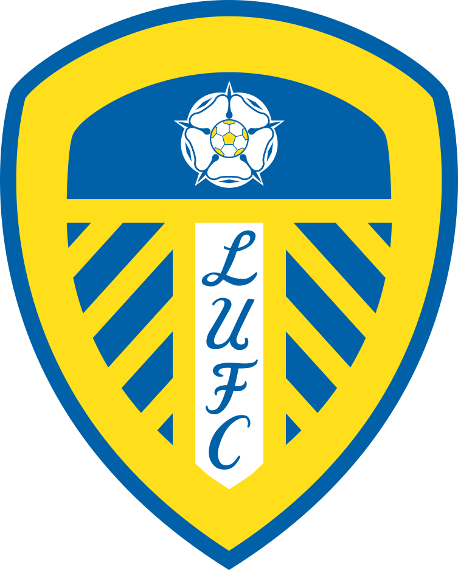 |
Leeds UnitedThe Whites | Daniel Farke | Noah Okafor | 38 | 11 | 14 | 13 | 49 | 56 | -7 | 47 | 7 | 12 | 12 | 16 | 12 | 12 | 15 | 16 | 15 | 16 | 16 | 18 | 18 | 17 | 16 | 17 | 16 | 16 | 16 | 16 | 16 | 16 | 16 | 16 | 16 | 15 | 15 | X | X | X | X | X | X | X | X | X | X | 14 |
| 15 | Crystal PalaceThe Eagles | Oliver Glasner | Daniel Munoz | 38 | 11 | 12 | 15 | 41 | 51 | -10 | 45 | 12 | 14 | 8 | 9 | 5 | 3 | 6 | 8 | 10 | 9 | 10 | 5 | 9 | 5 | 4 | 5 | 8 | 9 | 10 | 14 | 13 | 13 | 15 | 15 | 13 | 13 | 13 | X | X | X | X | X | X | X | X | X | X | 15 | |
| 16 | Nottingham ForestForest | The Garibaldis | The Reds | Vítor Pereira Sean Dyche [21/10/25-12/02/26] Ange Postecoglou [09/09/25-18/10/25] | Neco Williams | 38 | 11 | 11 | 16 | 48 | 51 | -3 | 44 | 5 | 5 | 10 | 15 | 15 | 17 | 17 | 18 | 18 | 19 | 19 | 16 | 16 | 16 | 17 | 16 | 17 | 17 | 17 | 17 | 17 | 17 | 17 | 17 | 17 | 17 | 17 | X | X | X | X | X | X | X | X | X | X | 16 | |
| 17 | Tottenham HotspurSpurs | The Lilywhites | Roberto De Zerbi Igor Tudor [13/02/26-29/03/26] Thomas Frank [12/06/25-11/02/26] |
Cristian Romero | 38 | 10 | 11 | 17 | 48 | 57 | -9 | 41 | 3 | 2 | 4 | 3 | 3 | 4 | 3 | 6 | 3 | 6 | 5 | 9 | 12 | 11 | 11 | 11 | 14 | 11 | 12 | 13 | 14 | 14 | 14 | 14 | 15 | 16 | 16 | X | X | X | X | X | X | X | X | X | X | 17 | |
| 18 | 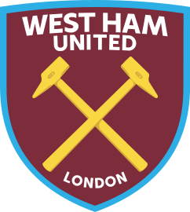 |
West Ham UnitedThe Hammers | The Irons | Nuno Espirito Santo Graham Potter [09/01/25-27/09/25] | Jarrod Bowen | 38 | 10 | 9 | 19 | 46 | 65 | -19 | 39 | 19 | 20 | 16 | 18 | 19 | 19 | 19 | 19 | 19 | 18 | 18 | 17 | 17 | 18 | 18 | 18 | 18 | 18 | 18 | 18 | 18 | 18 | 18 | 18 | 18 | 18 | 18 | 18 | 18 | 18 | 18 | 18 | 18 | 18 | 18 | 18 | 18 | 18 |
| 19 | 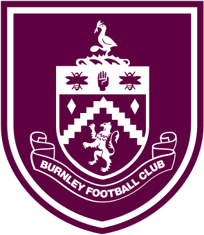 |
BurnleyThe Clarets | Mike Jackson (interim)Scott Parker [05/07/24-30/04/26] | Martin Dubravka | 38 | 4 | 10 | 24 | 38 | 75 | -37 | 22 | 18 | 11 | 14 | 17 | 16 | 18 | 18 | 17 | 16 | 17 | 17 | 19 | 19 | 19 | 19 | 19 | 19 | 19 | 19 | 19 | 19 | 19 | 19 | 19 | 19 | 19 | 19 | X | X | X | X | X | X | X | X | X | X | 19 |
| 20 | Wolverhampton WanderersWolves | The Old Gold | Rob EdwardsVitor Pereira [19/12/24-02/11/25] | Joao Gomes | 38 | 3 | 11 | 24 | 27 | 68 | -41 | 20 | 20 | 19 | 20 | 20 | 20 | 20 | 20 | 20 | 20 | 20 | 20 | 20 | 20 | 20 | 20 | 20 | 20 | 20 | 20 | 20 | 20 | 20 | 20 | 20 | 20 | 20 | 20 | X | X | X | X | X | X | X | X | X | X | 20 |
Table updated: 27/05/2026
|